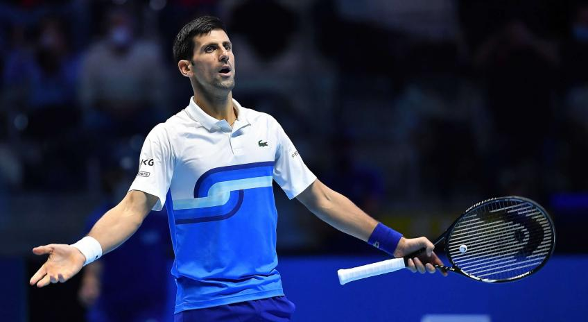
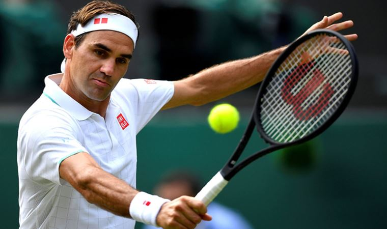

Şimdi ise teniste başarılı bazı insanlara göz atalım.

Rafael Nadal, profesyonel tenis dünyasında ilk kez 17 yaşında oynadığı 2003 Monte Carlo Master Series turnuvasıyla dikkat çekti. Karol Kucera ve Albert Costa'yı yendi. Bu da gelecekteki büyük başarıların ilki olarak dikkat çekti . ATP seviyesinde oynadığı üçüncü turnuvada Carlos Moya'yı mağlup edip herkesi şaşırttı. Oynadığı ilk Grand Slam olan Wimbledon 2003'te 3. tura yükseldi. 2004'ten itibaren klasmanda hızla yükseldi. 2004 yılında Sopot turnuvasını kazanan Nadal, bir yıl sonra aralarında Fransa Açık ve dört Master Serisi (Roma, Monte Carlo, Madrid, Montreal) turnuvasının da olduğu toplam 11 şampiyonluk elde etti.

2016 Avustralya Açık tek erkekler finalinde Andy Murray'i 6-1, 7-5 ve 7-6(3) setlerle yenerek kariyerindeki 6. Avustralya Açık, toplamda 11 grand slam şampiyonluğuna ulaşmıştır. Şu anda "Avustralya Açık'ı teklerde en fazla kazanan erkek tenisçi" unvanını, Roy Emerson ile paylaşıyor. Roger Federer'e karşı beş sette 2019 Wimbledon Finalini kazandı. Tarihin en uzun Wimbledon finalini kazanan Đoković, 16. Grand Slam şampiyonluğunu ilan etti.
